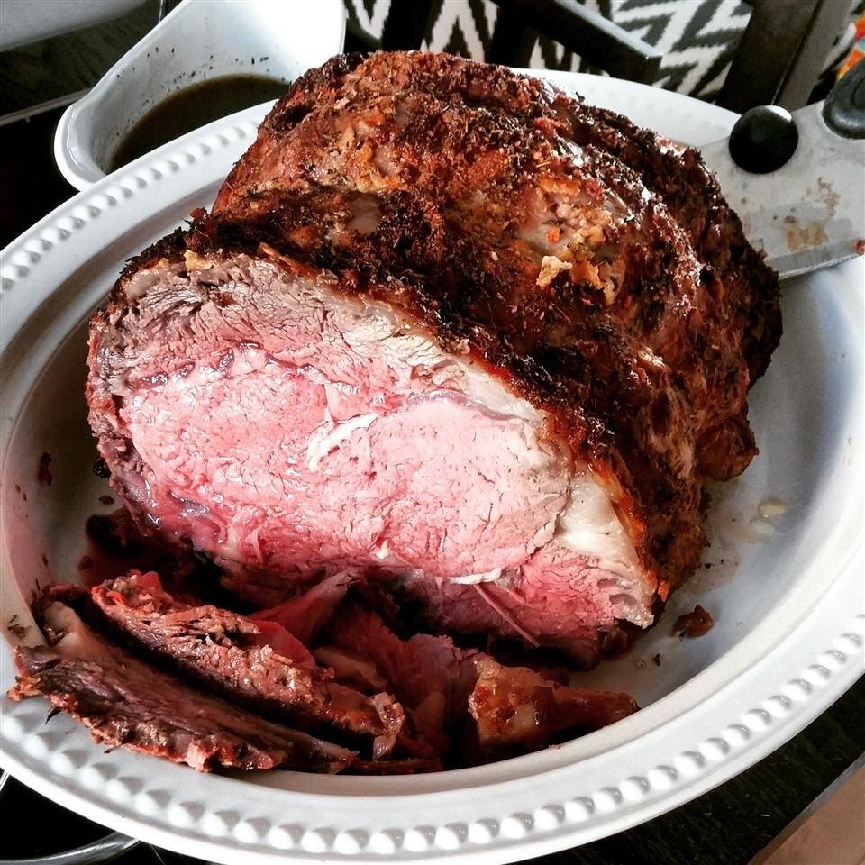

Prime Rib

This is the best recipe for boneless prime rib I know. Seasoned with a simple garlic and herb rub, it cooks in about 90 minutes and the meat comes out oh so tender.
Ingredients
- 1 (4 pound) boneless prime rib roast
- 2 tablespoons olive oil
- 6 cloves garlic, minced
- 3 teaspoons salt
- 3 teaspoons ground black pepper
- 1 teaspoon dried thyme
- 1 teaspoon dried rosemary
Steps
- Preheat the oven to 500 degrees F (260 degrees C).
- Place prime rib in a roasting pan, fat-side up.
- Blend olive oil, garlic, salt, pepper, thyme, and rosemary together in a food processor. Pour over the roast. Let sit at room temperature, about 15 minutes.
- Bake in the preheated oven for 20 minutes. Reduce oven temperature to 325 degrees F (165 degrees C). Cook until medium-rare or an instant-read thermometer reads at least 145 degrees F (63 degrees C), 60 to 75 minutes more.